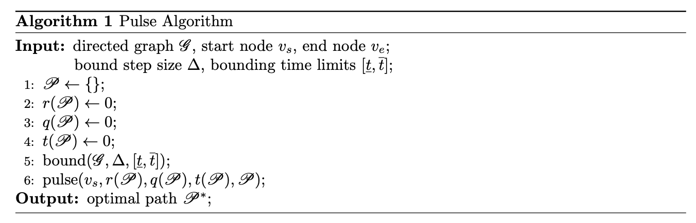
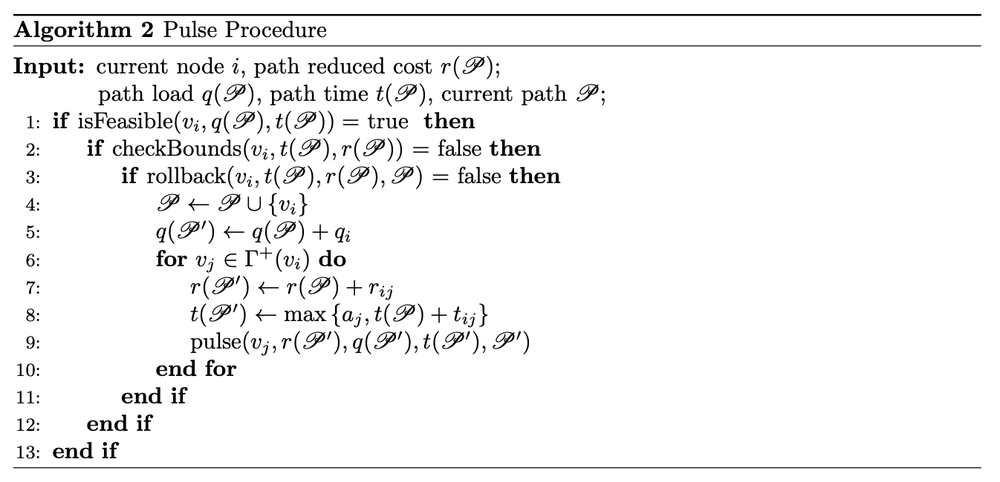
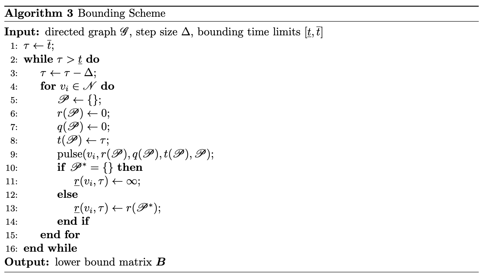
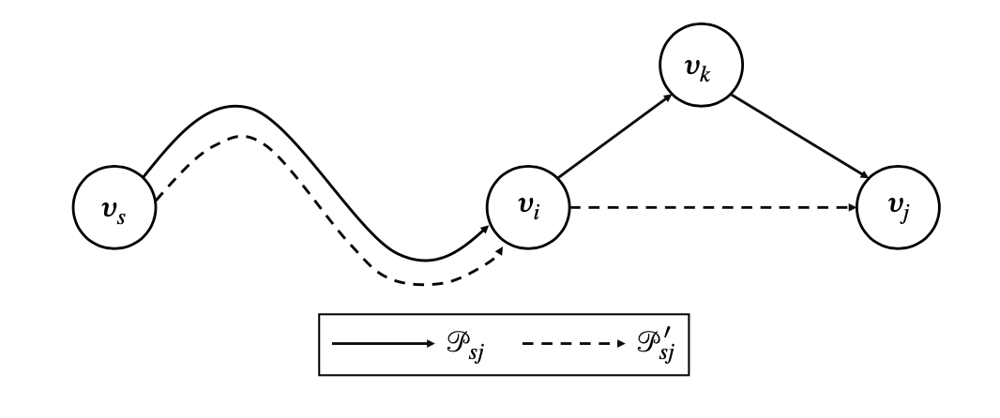

This week, I read the paper Lozano et al.(2016). The following are the reading notes.
1 Background
The Elementary Shortest Path Problem with Resource Constraints (ESPPRC) is NP-hard in the strong sense and often arises as the backbone of the branch-and-price procedure. Ac- celerating the solution of the ESPPRC is a critical aspect for improving the performance of column-generation based algorithms. The ESPPRC has been widely studied,
-
Desrochers et al. (1992) solved a relaxed version that allows cycles with a dynamic pro- gramming.
-
Feillet et al. (2004) proposed the first exact approach for the ESPPRC.
-
Righini and Salani (2008) proposed a bidirectional labeling algorithm for the ESPPRC that
relies on a state-space relaxation.
-
c proposed an novel exact method which performs well when compared against SOTA algorithms for the ESPPRC.
In this report, the motivation, overview and details of the algorithm (Pulse Algorithm) proposed by Lozano et al. (2016) are reported.
2 Motivation & Overview
Definition 1. Pulse Propagation refers to the recursive exploration of partial paths that are extended until they reach the end node or are discarded by a pruning strategy.
The pulse algorithm relies on implicit enumeration with a novel bounding scheme that dra- matically narrows the search space. Specifically, for ESPPRC, the pulse algorithm comprises two stages:
-
a bounding stage that finds lower bounds on the cost given an amount of resource consumed.
-
a recursive exploration stage that finds an optimal solution based on an implicit enumeration
of the solution space.
The exploration is triggered by sending a pulse from the start node $v_s \in \mathscr{N}$. The pulse tries to propagate throughout the outgoing arcs of each visited node, storing at each node the partial path $\mathscr{P}$, the cumulative reduced cost $r(\mathscr{P})$, the cumulative capacity consumption $q(\mathscr{P})$, and the cumulative time consumption $t(\mathscr{P})$.
At each node different pruning strategies try to stop the pulse propagation, aggressively pruning the search space. Ever pulse that reaches the final node $v_e \in \mathscr{N}$ contains all of the information of a feasible paths $\mathscr{P}$ from $v_s$ to $v_e$. The pseudo-code is shown below,

The pseudo-code of pulse procedure is shown below,

Every time the pulse procedure is invoked on the final node $v_e$, the information for the best-known path $\mathscr{P}^*$ is updated, the pulse stops its propagation, and the algorithm backtracks to propagate other pulses recursively.
\qquad Clearly, line 2 and line 3 play the role of pruning. And it is worth highlighting that every time that a pulse is pruned, a whole entire region of the solution space is discarded. Thus, the algorithm’s performance is strongly linked to the strength of the pruning strategies and their ability to prune pules at early stages of the exploration.
3 Pruning Strategies
As shown in Algorithm 3, there are three pruning strategies.
- Use structural constraints to prune infeasible solutions
- Use primal and lower bounds to prune suboptimal solutions
- Use a look-back mechanism to discard suboptimal partial paths
The first pruning strategy is straightforward (check time window, capacity and cycle constraints). The second is critically important. The pseudo-code is shown below,

The third one is also important. The behind idea is very simple. One of the main drawbacks of depth-first search is that poor decisions made at early stages of the exploration can lead to the exploration of unpromising regions of the search space.
Consider a partial path $\mathscr{P}_{si}$ from $v_s$ to $v_i$ that is extended to node $v_k$ and then reaches node $v_j$ as follow,

Let $\mathscr{P}^\prime_{sj} = \mathscr{P}{si} \cup \left\lbrace v_j\right\rbrace$, then clearly it can be proved that $\mathscr{P}{sj}$ can be dominated by $\mathscr{P}^\prime_{sj}$.
4 Conclusion
- The pulse algorithm is very similar to the traditional labeling algorithm.
- The difference is the pulse algorithm explores the graph in a depth-first manner, while the labeling algorithm follow a lexicographic breadth-first search.
- The pulse algorithm also can be seen as a branch and bound where each node corresponds to an elementary partial path.
- Another big difference is the pulse algorithm doesn’t need to handle a long list ordered labels. And it heavily relies on additional pruning strategies.